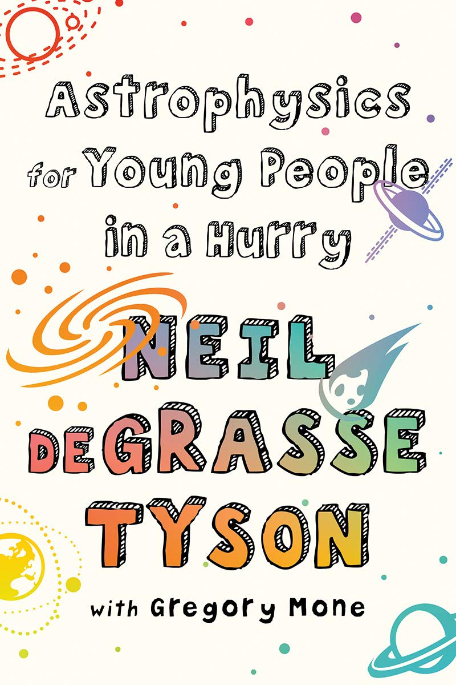

I am Dhruv R. B.. I am in 6th grade. I am 12 years old. I want to work in NASA when I grow up.
I like these hobbies because they are fun to do when you are free and bored. Coding and guitarplaying might be hard but they are really fun when you mastered it.
.jpg)
Computer programming is the process of designing and building an executable computer program to accomplish a specific computing result or to perform a specific task. Programming involves tasks such as: analysis, generating algorithms, profiling algorithms' accuracy and resource consumption, and the implementation of algorithms in a chosen programming language (commonly referred to as coding).
Reading is the complex cognitive process of decoding symbols to derive meaning. It is a form of language processing. Success in this process is measured as reading comprehension. Reading is a means for language acquisition, communication, and sharing information and ideas. The symbols are typically visual (written or printed) but may be tactile (Braille). Like all languages, it is a complex interaction between text and reader, shaped by prior knowledge, experiences, attitude, and the language community—which is culturally and socially situated. Readers use a variety of reading strategies to decode (to translate symbols into sounds or visual representations of speech) and comprehend. Readers may use context clues to identify the meaning of unknown words. Readers integrate the words they have read into their existing framework of knowledge or schema.

The guitar is a fretted musical instrument that usually has six strings. ... The classical guitar is often played as a solo instrument using a comprehensive finger-picking technique where each string is plucked individually by the player's fingers, as opposed to being strummed.
These are some good books for people aged from 12-14 years. Enjoy!
Recomended BooksHarry Potter is a famous charcater from the series Harry Potter by J.K. Rowling. He has appeared both in the movies and books. The actor in the movie is Daniel Radcliff.
Harry PotterAstrophysicists are people who study stars, galaxies, planets, satellites, black holes and other cosmic bodies.
Astrophysics for Young People in a Hurry Neil DeGrasse Tyson's book, Astrophysics for Young People in a Hurry(also a good book for those who like space), had inspired me to become an astrophysicist. It is a 176 paged book which explains from the start of the univers to Dark Matter and Dark Energy. Enjoy!
Neil DeGrasse Tyson